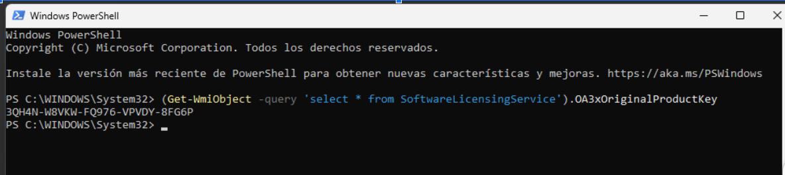

1. Presentación y Objetivos
El objetivo principal de este bloque de prácticas, desarrollado dentro del módulo formativo del certificado IFCT0110, ha sido la capacitación técnica para el despliegue de infraestructuras informáticas básicas.
El proyecto abarca desde la preparación del hardware y la instalación de un sistema operativo moderno (Windows 11), hasta la implementación de tecnologías de virtualización. Finalmente, se ha configurado una arquitectura Cliente-Servidor utilizando el protocolo FTP para verificar la conectividad y la transferencia de datos segura entre diferentes nodos de la red (físicos y virtuales), simulando un entorno de red departamental real.
2. Desarrollo Paso a Paso
2.1 Actividad 1: Despliegue del Sistema Operativo Anfitrión (Host)
En esta fase inicial, se preparó la estación de trabajo física para soportar el sistema operativo Windows 11 Pro y asegurar su capacidad para futuras tareas de virtualización.
Procedimiento Detallado:
- Obtención de la Imagen ISO:
- Se accedió al portal oficial de Microsoft para descargar la imagen de disco (ISO) de Windows 11.
- URL de descarga: https://www.microsoft.com/es-es/software-download/windows11
- Se utilizó la herramienta Rufus para la creacion de la USB booteable (memoria flash USB de al menos 8GB).
- Gestión de Licencias (Extracción de Clave):
- Previo al formateo, se procedió a extraer la clave de producto (Product Key) embebida en la BIOS/UEFI del equipo para garantizar la reactivación legal del software.
- Se ejecutó PowerShell (o Símbolo del sistema) con permisos de administrador y
se introdujo el siguiente comando:
(Get-WmiObject -query 'select * from SoftwareLicensingService').OA3xOriginalProductKey✅ (Get-WmiObject -query 'select * from SoftwareLicensingService').OA3xOriginalProductKey 
- Se copió la clave obtenida y se guardó en un archivo de texto para su posterior uso.
- Configuración BIOS/UEFI:
- Prioridad de arranque USB.
- CRÍTICO: Habilitación de virtualización (VT-x / AMD-V) para soporte de 64 bits.
- Instalación: Particionado y configuración inicial de Windows 11.
2.2 Actividad 2: Entorno Virtual
Creación de un entorno aislado para pruebas mediante Oracle VM VirtualBox.
Instalación Hipervisor
Instalación de VirtualBox + Extension Pack (Soporte USB 2.0/3.0 y mejoras de red).
Máquina Guest
Asignación de recursos (RAM, CPU, VDI) e instalación limpia de Windows 11 virtualizado.
2.3 Actividad 3: FTP y Redes
Establecimiento de comunicación de red departamental usando FileZilla.
Configuración de Red (Modo Puente)
Se configuró la VM en modo "Bridged Adapter". Esto asigna una IP real de la red del aula a la máquina virtual, haciéndola visible como un dispositivo físico más.
Matriz de Pruebas Realizadas
-
1. Host (Local) ↔ Guest (Virtual)
✅ Conexión establecida y transferencia exitosa.

-
2. Host (Mío) → Host (Compañero)
✅ Visibilidad entre equipos físicos en la red.

-
3. Virtual (Mía) → Host (Compañero)
✅ La VM puede acceder a recursos físicos externos.

-
4. Host (Mío) → Virtual (Compañero)
✅ El Host puede acceder a VMs en otros equipos (Bridged Mode).

-
5. Virtual (Mía) → Virtual (Compañero)
✅ Conexión directa entre máquinas virtuales de distintos anfitriones.

-
6. Virtual (Mía) → Host (Mío)
✅ Comprobación de conectividad inversa (Guest a Host).

3. Conclusión
La realización de estas prácticas en el CIFO La Violeta ha permitido consolidar competencias fundamentales:
- Dominio de instalación limpia y gestión de BIOS.
- Comprensión profunda de la virtualización de laboratorios.
- Gestión de redes mixtas (Físicas + Virtuales).
- Implementación real de arquitectura Cliente-Servidor (FTP).
Este módulo establece la base técnica necesaria para la operación avanzada de redes departamentales.